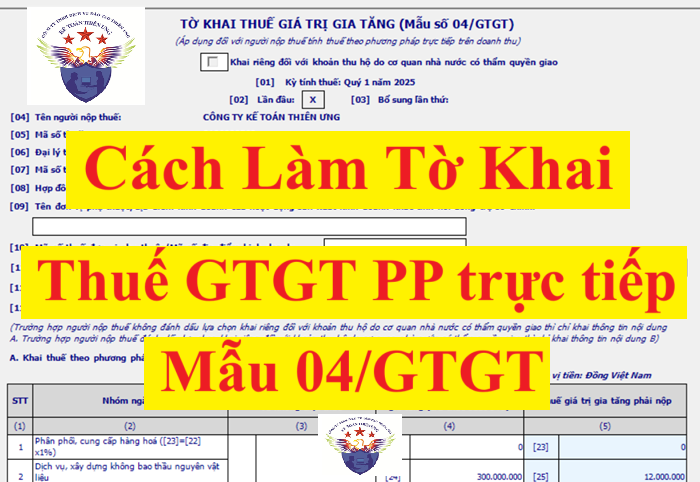
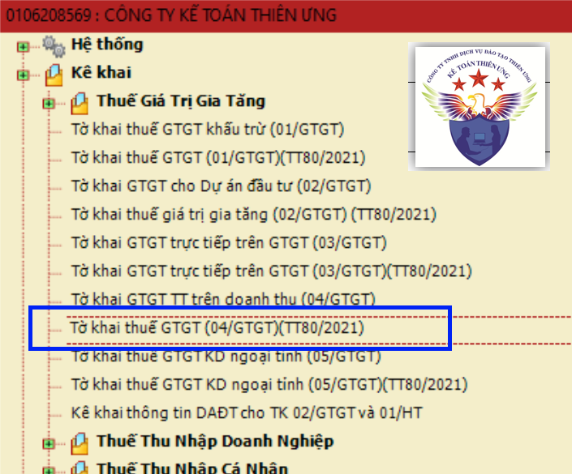
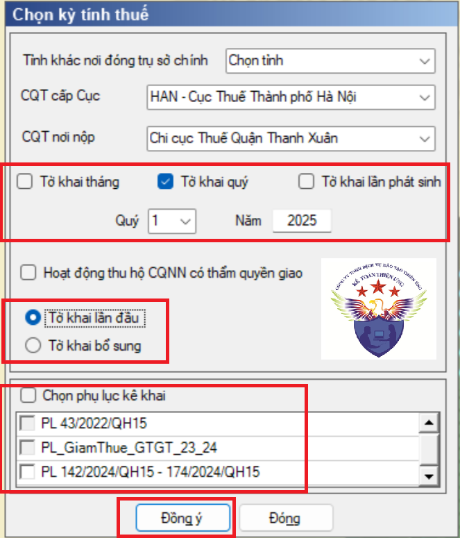
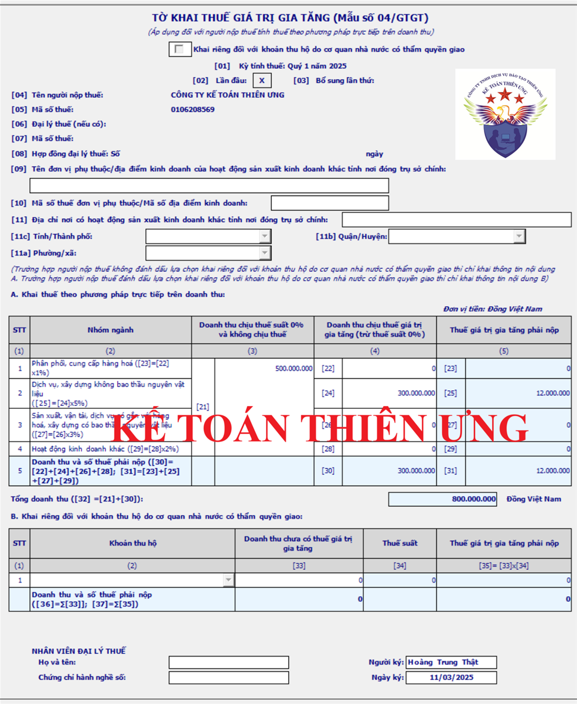
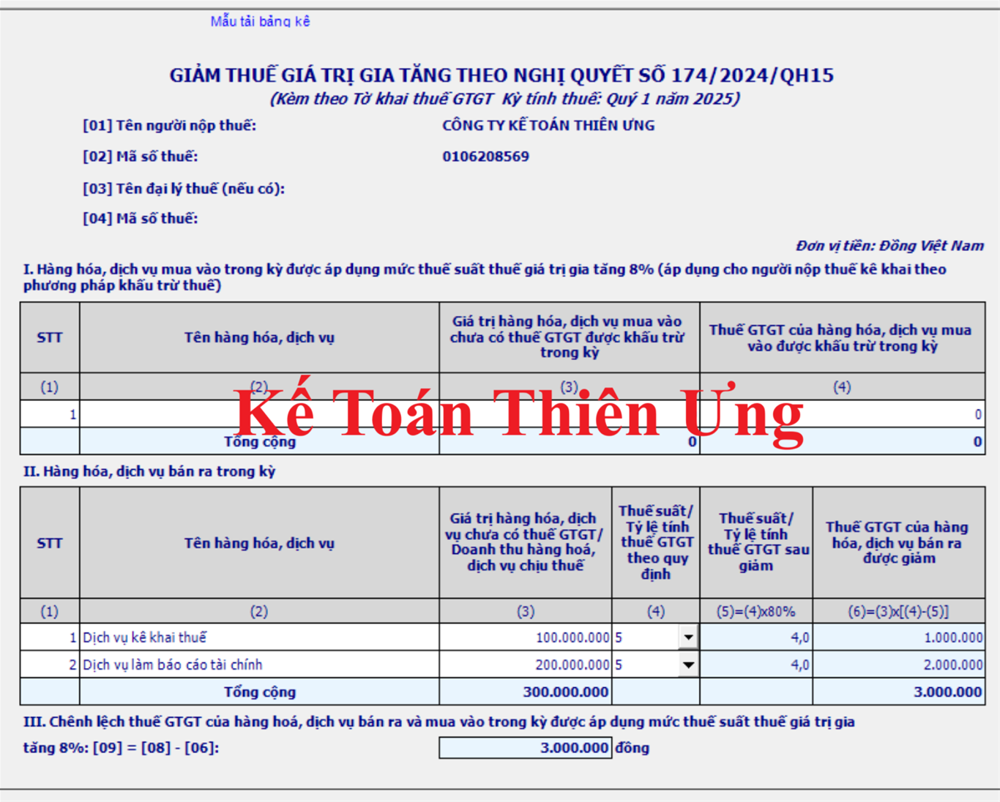

Hướng dẫn cách lập tờ khai thuế GTGT mẫu 04/GTGT trực tiếp trên doanh thu: Cách kê khai từng chỉ tiêu trên Tờ khai thuế 04/GTGT theo phương pháp trực tiếp trên doanh thu trên phần mềm HTKK mới nhất.
Chú ý:

- Mẫu Tờ khai 04/GTGT là Tờ khai thuế GTGT trực tiếp trên doanh thu dành cho những Doanh nghiệp kê khai thuế GTGT theo phương pháp trực tiếp trên doanh thu.
=> Những đối tượng kê khai thuế GTGT theo phương pháp trực tiếp trên doanh thu, bạn có thể xem thêm tại đây: Cách kê khai thuế GTGT theo phương pháp trực tiếp
- Mẫu 03/GTGT Tờ khai thuế GTGT trực tiếp trên giá trị gia tăng dành cho Người nộp thuế mua bán, chế tác vàng, bạc, đá quý.
-------------------------------------------------------------------------------------
Sau đây Kế toán Diệu Tâm sẽ hướng dẫn cách lập tờ khai thuế GTGT mẫu 04/GTGT trực tiếp trên doanh thu chi tiết:
- Trước khi thực hiện việc kê khai bạn nên cài phần mềm HTKK mới nhất để theo đúng quy định và tránh 1 số lỗi khi nộp tờ khai. Nếu bạn chưa biết hiện tại mới nhất là phiên bản nào thì có thể xem tại đây: Phần mềm HTKK mới nhất
-------------------------------------------------------------------
- Sau khi cài đặt xong các bạn đăng nhập vào HTKK:- > Chọn: “Tờ khai GTGT (04/GTGT)(TT80/2021)”

-> Chọn "Tháng" hoặc "Qúy" để kê khai. (Mặc định sẽ là kỳ hiện tại)

(1) Chọn kỳ kê khai theo tháng hoặc theo quý
Thực hiện theo quy định điểm a khoản 1 Điều 8 của Nghị định 126/2020/NĐ-CP và Điều 9 của Nghị định 126/2020/NĐ-CP:
- Khai thuế giá trị gia tăng theo quý áp dụng đối với:
+ Doanh nghiệp có tổng doanh thu bán hàng hoá và cung cấp dịch vụ của năm trước liền kề từ 50 tỷ đồng trở xuống thì được khai thuế giá trị gia tăng theo quý.
+ Doanh nghiệp mới thành lập
=> Lưu ý: Đối với các công ty đủ điều kiện kê khai thuế GTGT theo quý thì được quyền lựa chọn kê khai thuế GTGT theo tháng hoặc theo quý
- Khai thuế giá trị gia tăng theo tháng áp dụng đối với:
+ Doanh nghiệp có tổng doanh thu bán hàng hoá và cung cấp dịch vụ của năm trước liền kề trên 50 tỷ đồng.
+ Doanh nghiệp có tổng doanh thu bán hàng hoá và cung cấp dịch vụ của năm trước liền kề từ 50 tỷ đồng trở xuống nhưng lựa chọn khai thuế giá trị gia tăng theo tháng.
- Đối tượng nộp thuế khai thuế GTGT theo từng lần phát sinh:
+ Người nộp thuế theo quy định tại khoản 3 Điều 7 Nghị định số 126/2020/NĐ-CP (người nộp thuế không phải nộp hồ sơ khai thuế) hoặc người nộp thuế thực hiện khai thuế giá trị gia tăng theo phương pháp trực tiếp trên giá trị gia tăng theo quy định của pháp luật về thuế giá trị gia tăng nhưng có phát sinh nghĩa vụ thuế giá trị gia tăng đối với hoạt động chuyển nhượng bất động sản.
+ Người nộp thuế áp dụng theo phương pháp trực tiếp trên giá trị gia tăng Thuế không phát sinh thường xuyên hoạt động sản xuất kinh doanh, trừ trường hợp người nộp thuế trong tháng phát sinh nhiều lần thì được khai theo tháng.
(Điểm a, đ Khoản 4 Điều 8 Nghị định số 126/2020/NĐ-CP).
(2) Chọn trạng thái tờ khai là lần đầu hay bổ sung
Phần mềm để mặc định là "Tờ khai lần đầu"
+ Nếu là lần đầu làm tờ khai thuế GTGT cho kỳ tính thuế này thì chọn trạng thái “Lần đầu”
+ Nếu là lần đầu làm tờ khai thuế GTGT cho kỳ tính thuế này thì chọn trạng thái “Lần đầu”
+ Chọn trạng thái “Bổ sung” trong trường hợp: Sau khi DN nộp tờ khai lần đầu và đã nhận được Thông báo chấp nhận hồ sơ khai thuế đối với Tờ khai thuế “Lần đầu” => Sau đó, DN phát hiện ra hồ sơ khai thuế lần đầu đã nộp cho cơ quan thuế có sai, sót => DN tiến hành làm tờ khai điều chỉnh bổ sung cho tờ khai thuế có sai sót đó thì sẽ thực hiện chọn trạng thái tờ khai là “Bổ sung” theo số thứ tự của từng lần bổ sung.
(3) Chọn phụ lục đính kèm tờ khai (nếu có phát sinh)
Nếu trong kỳ kê khai, doanh nghiệp có phát sinh việc bán hàng hóa, cung cấp dịch vụ được giảm thuế GTGT thì khi làm tờ khai thuế GTGT sẽ chọn thêm phụ lục “PL 142/2024/QH15 - 174/2024/QH15” để kê khai các mặt hàng được giảm thuế GTGT đó vào phụ lục “PL 142/2024/QH15 - 174/2024/QH15”.
-> Chi tiết các hàng hóa, dịch vụ được giảm; Điều kiện được giảm... Các bạn xem tại đây nhé:
Giảm thuế GTGT năm 2025 theo Nghị định 180/2024/NĐ-CP
-> Chi tiết các hàng hóa, dịch vụ được giảm; Điều kiện được giảm... Các bạn xem tại đây nhé:
Giảm thuế GTGT năm 2025 theo Nghị định 180/2024/NĐ-CP
(4) Bấm đồng ý để vào tờ khai thuế GTGT mẫu 04/GTGT

-------------------------------------------------------------------------
Cách lập tờ khai thuế 04/GTGT trực tiếp trên doanh thu:
Bước 1: Làm phụ lục “PL 142/2024/QH15 - 174/2024/QH15” trước
Nếu trong kỳ kê khai, doanh nghiệp có phát sinh việc bán hàng hóa, cung cấp dịch vụ được giảm thuế GTGT thì: Kê khai các mặt hàng được giảm thuế GTGT đó vào phụ lục “PL 142/2024/QH15 - 174/2024/QH15” trước để phần mềm tự động tổng hợp, cấn trừ vào số tiền thuế GTGT phải nộp tại cột (5) trên tờ khai thuế GTGT mẫu 04/GTGT

Doanh nghiệp có thể làm trực tiếp phụ lục PL 142/2024/QH15 - 174/2024/QH15 trên phần mềm HTKK hoặc Tải bảng kê Excel về làm trước rồi lại tải lên phần mềm HTKK
+ Mỗi mặt hàng đưa vào 1 dòng (Khi làm trên phần mềm HTKK: Muốn thêm dòng thì bấm vào 1 dòng nào đó rồi ấn phím F5)
+ Được kê khai chung theo tên hàng hóa dịch vụ lên phụ lục PL 142/2024/QH15 - 174/2024/QH15, mà không cần kê khai chi tiết theo từng hóa đơn hoặc từng lần bán
Nếu mặt hàng được giảm thuế đó được xuất bán nhiều lần trong kỳ kê khai thì tổng hợp, tổng cộng tất cả các lần bán trong kỳ đó lại để kê khai vào 1 dòng trên phụ lục
+ Không chọn thêm phụ lục “PL 142/2024/QH15 - 174/2024/QH15”
+ Bỏ qua bước số 1 này, thực hiện luôn bước số 2 – Làm tờ khai thuế GTGT mẫu 04/GTGT dưới đây
Bước 2: Làm tờ khai thuế GTGT mẫu 04/GTGT
Chú ý:
- Kê khai thuế GTGT theo phương pháp trực tiếp trên Doanh thu là chỉ quan tâm đến doanh thu (tức là các bạn xuất bao nhiêu hóa đơn đầu ra thì phải kê khai bấy nhiêu) -> Không quan tâm đến hóa đơn đầu vào (tức là không cần kê khai hóa đơn đầu vào, vì không được khấu trừ).
-> Nhưng hóa đơn đầu vào -> Các bạn vẫn phải lấy để hạch toán vào Chi phí được trừ khi tính thuế TNDN.
- Tiếp đó các bạn cần quan tâm là: Hàng hóa, dịch vụ Công ty bạn chịu thuế suất bao nhiêu % trên doanh thu, chi tiết tại đây:
|
1) Phân phối, cung cấp hàng hoá: tỷ lệ 1% - Hoạt động bán buôn, bán lẻ các loại hàng hóa (trừ giá trị hàng hóa đại lý bán đúng giá hưởng hoa hồng). 2) Dịch vụ, xây dựng không bao thầu nguyên vật liệu: tỷ lệ 5% - Dịch vụ lưu trú, kinh doanh khách sạn, nhà nghỉ, nhà trọ; - Dịch vụ cho thuê nhà, đất, cửa hàng, nhà xưởng, cho thuê tài sản và đồ dùng cá nhân khác; - Dịch vụ cho thuê kho bãi, máy móc, phương tiện vận tải; Bốc xếp hàng hoá và hoạt động dịch vụ hỗ trợ khác liên quan đến vận tải như kinh doanh bến bãi, bán vé, trông giữ phương tiện; - Dịch vụ bưu chính, chuyển phát thư tín và bưu kiện; - Dịch vụ môi giới, đấu giá và hoa hồng đại lý; - Dịch vụ tư vấn pháp luật, tư vấn tài chính, kế toán, kiểm toán; dịch vụ làm thủ tục hành chính thuế, hải quan; - Dịch vụ xử lý dữ liệu, cho thuê cổng thông tin, thiết bị công nghệ thông tin, viễn thông; - Dịch vụ hỗ trợ văn phòng và các dịch vụ hỗ trợ kinh doanh khác; - Dịch vụ tắm hơi, massage, karaoke, vũ trường, bi-a, internet, game; - Dịch vụ may đo, giặt là; Cắt tóc, làm đầu, gội đầu; - Dịch vụ sửa chữa khác bao gồm: sửa chữa máy vi tính và các đồ dùng gia đình; - Dịch vụ tư vấn, thiết kế, giám sát thi công xây dựng cơ bản; - Các dịch vụ khác; - Xây dựng, lắp đặt không bao thầu nguyên vật liệu (bao gồm cả lắp đặt máy móc, thiết bị công nghiệp). 3) Sản xuất, vận tải, dịch vụ có gắn với hàng hoá, xây dựng có bao thầu nguyên vật liệu: tỷ lệ 3% - Sản xuất, gia công, chế biến sản phẩm hàng hóa; - Khai thác, chế biến khoáng sản; - Vận tải hàng hóa, vận tải hành khách; - Dịch vụ kèm theo bán hàng hóa như dịch vụ đào tạo, bảo dưỡng, chuyển giao công nghệ kèm theo bán sản phẩm; - Dịch vụ ăn uống; - Dịch vụ sửa chữa và bảo dưỡng máy móc thiết bị, phương tiện vận tải, ô tô, mô tô, xe máy và xe có động cơ khác; - Xây dựng, lắp đặt có bao thầu nguyên vật liệu (bao gồm cả lắp đặt máy móc, thiết bị công nghiệp). 4) Hoạt động kinh doanh khác: tỷ lệ 2% - Hoạt động sản xuất các sản phẩm thuộc đối tượng tính thuế GTGT theo phương pháp khấu trừ với mức thuế suất thuế GTGT 5%; - Hoạt động cung cấp các dịch vụ thuộc đối tượng tính thuế GTGT theo phương pháp khấu trừ với mức thuế suất thuế GTGT 5%; - Các hoạt động khác chưa được liệt kê ở các nhóm 1, 2, 3 nêu trên. |
Xem thêm chi tiết tại đây nhé:
---------------------------------------------------------------------
Cách nhập các chỉ tiêu cụ thể như sau:Chỉ tiêu [21]: Ghi tổng doanh thu của hàng hóa, dịch vụ thuộc đối tượng chịu thuế suất 0% và không chịu thuế GTGT (không phân biệt nhóm ngành kinh doanh).
Xem thêm: Đối tượng không chịu thuế GTGT.
Chỉ tiêu [22]: Ghi tổng doanh thu hàng hóa dịch vụ chịu thuế GTGT 1%, cụ thể là thuộc nhóm ngành “Phân phối, cung cấp hàng hóa”.Chỉ tiêu [24]: Ghi tổng doanh thu hàng hóa dịch vụ chịu thuế GTGT 5%, cụ thể là thuộc nhóm ngành “Dịch vụ, xây dựng không bao thầu nguyên vật liệu”.
Chỉ tiêu [26]: Ghi tổng doanh thu hàng hóa dịch vụ chịu thuế GTGT 3%, cụ thể là thuộc nhóm ngành “Sản xuất, vận tải, dịch vụ có gắn với hàng hóa, xây dựng có bao thầu nguyên vật liệu”.
Chỉ tiêu [28]: Ghi tổng doanh thu hàng hóa dịch vụ chịu thuế GTGT 2%, cụ thể là thuộc nhóm ngành kinh doanh khác, không thuộc các nhóm ngành đã nêu trên.
Lưu ý: Đối với những doanh nghiệp có phát sinh mặt hàng được giảm thuế GTGT thì số liệu tại cột 4 - Doanh thu chịu thuế GTGT sẽ bao gồm cả doanh thu được giảm thuế và doanh thu không được giảm thuế
---------------------------------------------------------------------
Thời hạn nộp tờ khai thuế GTGT mẫu 04/GTGT trực tiếp trên doanh thu:Tại Điều 44 Luật quản lý thuế 38/2019/QH14 quy định cụ thể như sau:
- Thời hạn nộp tờ khai thuế GTGT theo tháng: Chậm nhất là ngày thứ 20 của tháng tiếp theo tháng phát sinh nghĩa vụ thuế đối với trường hợp khai và nộp theo tháng;
Ví dụ: Hạn nộp Tờ khai thuế GTGT tháng 2/2025 là ngày 20/3/2025
- Thời hạn nộp tờ khai thuế GTGT theo quý: Chậm nhất là ngày cuối cùng của tháng đầu của quý tiếp theo quý phát sinh nghĩa vụ thuế đối với trường hợp khai và nộp theo quý.
Ví dụ: Hạn nộp Tờ khai thuế GTGT Qúy 1/2025 là ngày 30/04/2025. Nhưng do ngày 30/04 là ngày nghỉ nên được chuyển sang ngày làm việc tiếp theo
Theo quy định tại Điều 86 của thông tư 80/2021/TT-BTC về Thời hạn nộp hồ sơ khai thuế và thời hạn nộp thuế thì:
Trường hợp thời hạn nộp hồ sơ khai thuế, thời hạn nộp thuế trùng với ngày nghỉ theo quy định thì thời hạn nộp hồ sơ khai thuế, thời hạn nộp thuế được tính là ngày làm việc tiếp theo của ngày nghỉ đó
Kỳ nghỉ Lễ 30/4 và 1/5 năm 2025: Được nghỉ 05 ngày liên tục từ ngày 30/4/2025 đến hết ngày 04/5/2025 (Theo Thông báo 6150/TB-BLĐTBXH của Bộ Lao động - Thương binh và Xã hội) => Ngày làm tiếp theo là ngày: 05/05/2025
=> Hạn nộp tờ khai thuế GTGT của quý 1/2025: Chậm nhất là ngày 05/05/2025
Theo quy định tại Điều 86 của thông tư 80/2021/TT-BTC về Thời hạn nộp hồ sơ khai thuế và thời hạn nộp thuế thì:
Trường hợp thời hạn nộp hồ sơ khai thuế, thời hạn nộp thuế trùng với ngày nghỉ theo quy định thì thời hạn nộp hồ sơ khai thuế, thời hạn nộp thuế được tính là ngày làm việc tiếp theo của ngày nghỉ đó
Kỳ nghỉ Lễ 30/4 và 1/5 năm 2025: Được nghỉ 05 ngày liên tục từ ngày 30/4/2025 đến hết ngày 04/5/2025 (Theo Thông báo 6150/TB-BLĐTBXH của Bộ Lao động - Thương binh và Xã hội) => Ngày làm tiếp theo là ngày: 05/05/2025
=> Hạn nộp tờ khai thuế GTGT của quý 1/2025: Chậm nhất là ngày 05/05/2025
----------------------------------------------------------
Thời hạn nộp tiền thuế GTGT (nếu có):
Nếu trên tờ khai thuế GTGT mẫu 04/GTGT mà có số tiền phát sinh tại chỉ tiêu 32 - Tổng doanh thu thì đây chính là số tiền thuế GTGT mà doanh nghiệp bạn phải nộp về ngân sách nhà nước
Hạn nộp tiền cũng giống như hạn nộp tờ khai
Ví dụ như trường hợp của công ty Kế Toán Diệu Tâm
Tại tờ khai thuế GTGT mẫu 04/GTGT của kỳ quý 1/2025 bên trên: đang phát sinh số tiền là 800.000đ tại chỉ tiêu 32 - Tổng doanh thu thì đây chính là số tiền thuế GTGT mà Công ty Kế Toán Diệu Tâm phải nôp về ngân sách nhà nước
Hạn nộp tiền thuế GTGT của kỳ quý 1/2025, chậm nhất là ngày 05/05/2025
----------------------------------------------------------
Chú ý: Những DN kê khai thuế GTGT trực tiếp trên doanh thu, các bạn vẫn phải hạch toán Chi phí vào sổ sách và làm BCTC, tờ khai quyết toán thuế TNDN như DN kê khai thuế GTGT theo phương pháp khấu trừ nhé!
------------------------------------------------------------------------------------------------
Kế toán Diệu Tâm xin chúc các bạn thành công!
Các muốn học thực hành các kỹ năng làm kế toán thuế, kê khai thuế tháng - quý, thủ thuật tối ưu chi phí, xác định chi phí được trừ, kỹ năng quyết toán thuế .... thì có thể tham gia:
Lớp học kế toán thuế thực tế chuyên sâu.
Lớp học kế toán thuế thực tế chuyên sâu.
----------------------------------------------------------------------